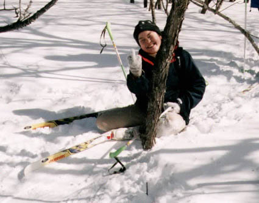

Cross Country Ski trip
, February 3-4, 2001
(organised by Victor Heese)
photo by Victor Heese

A nice picture of Naomi, but for reasons unknown no other
photos of this trip have surfaced.
Back to the Home Page